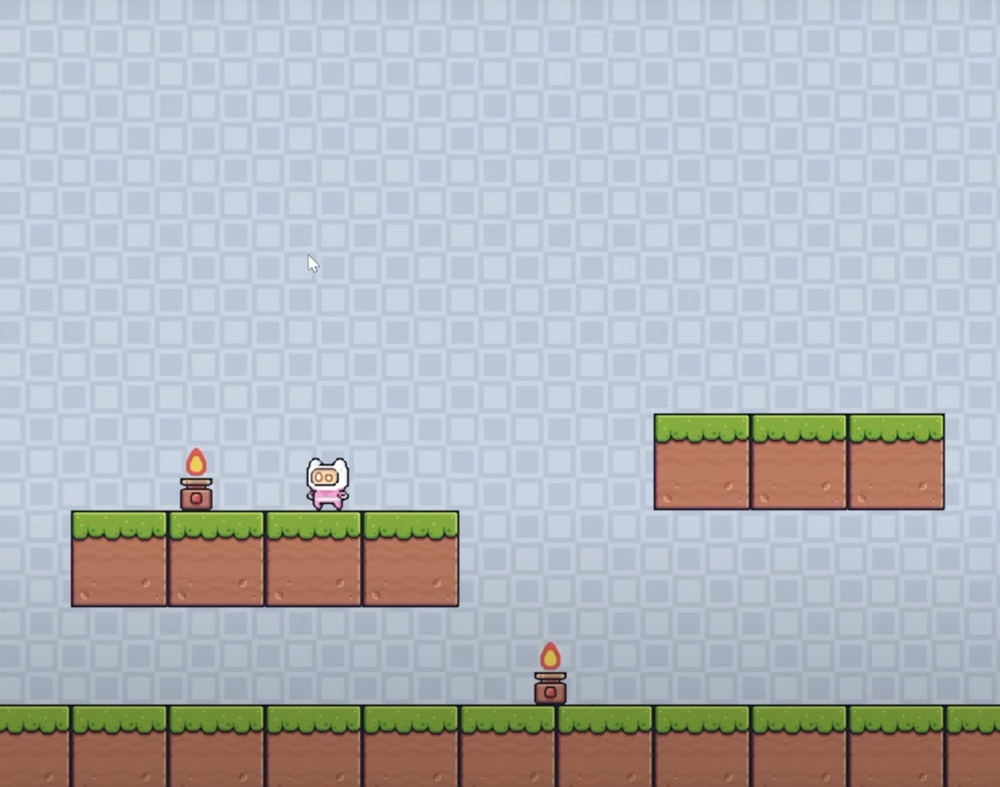

Game Development Using Pygame
Built two game applications, a platform jumper game and 2048, to further my skills in simulating physics and mathmatical operations. These projects also enhanced my skills in game mechanics, game state management, and responsive controls.

-
Platform Jumper: Created a platform jumper game that involved simulating fundamental physics concepts like gravity, velocity, and collision detection
-
2048: Used matrix manipulation, numerical patterns, and algorithmic efficiency. Implemented logic for dynamic grid updates, collision detection, and score tracking